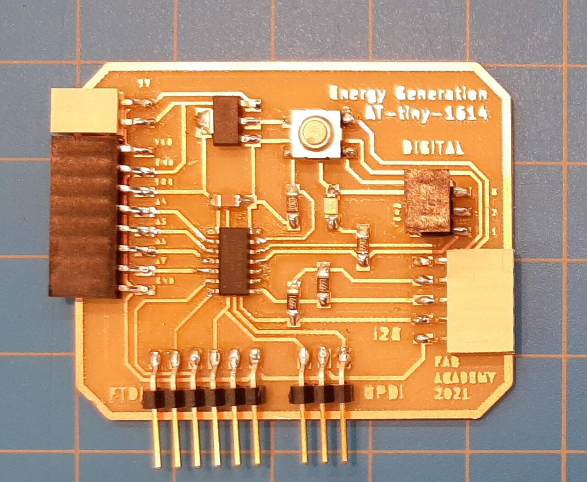
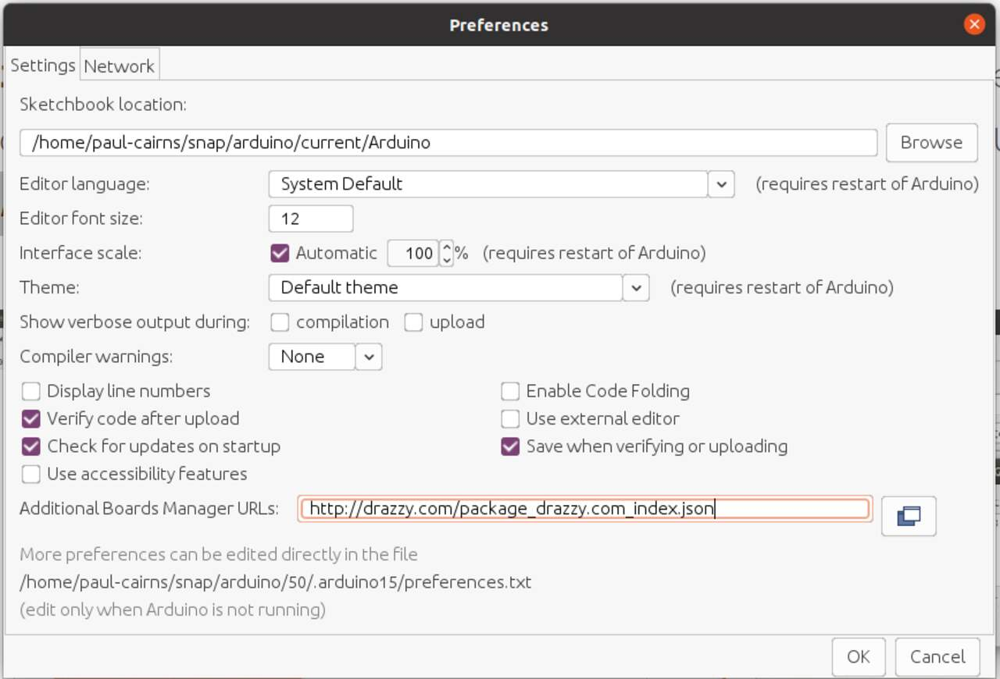

For this weeks assignment, we were tasked with designing, milling, soldering, and testing our own circuit board. The purpose of the assignment is to familiarize ourselves with the desgin tools and software (such as KiCad) and also how to test and debug a board. The details of the assignment are below.
Group assignment:
- Use the test equipment in your lab to observe the operation of a microcontroller circuit board (in minimum, check operating voltage on the board with multimeter or voltmeter and use oscilloscope to check noise of operating voltage and interpret a data signal)
- Document your work (in a group or individually)
Individual assignment:
- Redraw one of the echo hello-world boards or something equivalent,
- add (at least) a button and LED (with current-limiting resistor) or equivalent input and output,
- check the design rules,
- make it,
- test it.
Learning outcomes:
- Select and use software for circuit board design
- Demonstrate workflows used in circuit board design
- Have you answered these questions?
- Linked to the group assignment page
- Documented what you have learned in electronics design
- Explained problems and how you fixed them, if you make a board and it doesn’t work; fix the board (with jumper wires etc) until it does work.
- Included original design files (Eagle, KiCad, - whatever)
- Included a ‘hero shot’ of your board
- Loaded a program and tested if your board works
Group Assignment
The group assignment was to use test equipment in the lab to observe the operation of a microcontroller circuit board using an oscilloscope and a voltmeter. For this week, we actually used the equipment to check the final circuitboard created for the individual assignment. The video explaining how to use the equipment is shown below.
The exercise was very fun, and extremely valuable in understanding how the circuit works. The type of oscilloscope used was:
ADD PHOTO AND NAME OF OSCILLOSCOPE
The next part of the assignment was to proceed to the individual assignment as detailed below.
Individual Assignment
The objective of this assignment was to redraw an existing circuit board design using a design software of your choice and to add a button and LED to it. The assignment asked to create the echo hello-world board, but since it is of interest for our lab to learn and use Arduino, we will be making the Adrianino, a board developed by Fab Academy’s own Adrian Torres that makes use of the Arduino IDE programming language. A photo of the Adrianino in the picture below. You can also find all the details regarding the design at Adrian Torres’ Fab Academy Site
PHOTO OF ADRIANINO
The following sections will detail, step-by-step the design process used to draw the Adruino using kiCad.
Learning electronics design
In this section I will discuss the steps that were taken to learn electronics design. Beginnig with installation and learning of the program (KiCad), through to drawing a board and finalizing the trace to be milled.
Installing KiCad
The program chosen for electronics design was KiCad. Kris from Aalto Fab (another member of the Fab Academy) made a great video tutorial that teaches how to install and use KiCad in the context of FabAcademy. The video is included below:
The above video is the video I used to install KiCad Version 5.1.9 on my linux machine. This video also instructs you how to include the Fab Academy KiCad library. Therefore, if you are part of the Fab Academy, I highly recommend using the video above. For those who are not part of the Fab Academy, you can use these shorter useful videos for installing KiCad below:
for Windows you can use this video as a reference:
Learning/using KiCad
I learned how to use KiCad by completing the tutorial video above that was created by Fab Academy’s Kris of Aalto Fab. You can find the video, and his youtube channel here.
Electronics design workflow
Now that we have learned the basics of electronics design and how to use KiCad. I will now discuss the electronics design workflow. This section will discuss step by step the tasks to follow in order to design your circuit board, mill it, solder it, and debug it. We will begin with the first step of reviewing the drawings and components list. The workflow is as follows
- Review the drawings and spec sheet
- Create your electrical schematic
- Create your board layout
- Export your board layout to SVG
- Mill your circuit board
- Solder
- Program
- Debug
1. Review the Drawings and Spec sheet
If you are reacreating an exisiting PCB (printed circuit board) design, than there will likely already exist a drawing and spec sheet that identifies all of the components and their specifications. In this step you will review the spec sheet and ensure you have an in-depth understanding of the micro-controller and its functions.
If you are designing a PCB from scratch, in this step you will select your microcontroller and specifications and start with a first iteration of your circuit design. You can test your design using KiCad.
For this assignment, I was working off of a design made by Adrian Torres of the Fab Academy called the Adrianino. An image of the board layout used as reference is pictured below:
The micro-controller used at the heart of the board is called the AT-Tiny 1614 microcontroller. Its design specs can be found here. A photo of the pinout is included below:
Here is the pinout that includes the Arduino pins
2. Create your electrical schematic file
The next step in the electronics design workflow is to use one your electrical design software (in my case, KiCad) to generate your electrical schematic. For a very detailed step-by-step guide on how to do this, I recommend the video by Kris from AaltoFab shown above. That video will help walk you through the process of creating your electrical schematic. The components to include in the design are:
- 1 x AT-Tiny-1614 MCU
- 1 x 1uF Capacitor
- 2 x 4.99 kOhm Resistor
- 1 x 499 Ohm Resistor
- 1 x 1 kOhm Resisitor
- 1 x LED
- 1 x 5V 1A Voltage regulator
- 1 x F-1x2 pin connector (2.54mm)
- 1 x F-1x8 pin connector (2.54mm) for I2C
- 1 x F-1x5 pin connector (2.54mm)
- 1 x M-1x6 pin connector (2.54mm) for FTDI
- 1 x M-1x3 pin connector (2.54mm) for UPDI
- 1 x M-2x3 pin connector
Be sure to download and add the Fab Academy KiCad schematics library to your version of KiCad using this link. This library will contain all of the components used in the creation of the schematic. An image of the final electrical schematic is included below:
Once you have finished creating your electrical schematic, the next step in the workflow is to use your schematic files to create a board layout.
3. Create the board layout file
Using KiCad, it is possible to convert your electrical schematic into a board layout file where you can draw the layout of your components and create your traces. As mentioned before, it is recommended that you use the video tutorial created by Kris from AaltoFab shown above to learn how to do this using KiCad.
One very important step is to ensure that all of the connections are properly tagged in your schematic file before converting to the board mode. Below are some of the settings used for my trace widths as well as the results from my board layout.
- Track width = 0.4mm
- Cut width = 0.4mm
Once the board layout and traces are completed, it is possible to export your results as SVG and prepare them for milling
4. Create SVG for milling
The next step is to export your board layout as an SVG format and convert it for milling. You begin by exporting the SVG file using KiCad, but after export it is necessary to format it so that it is suitable for milling. It is possible to do this using one of the following options:
- mods using video tutorial created by Kris from AaltoFab shown above as reference
- Inkscape
- Illustrator
The way to convert the SVG using inkscape or illustrator is using the following techniques.
- Group all items
- Edit > make bitmap copy
- Delete original
- Path > trace bitmap
- Select “invert” box
- Press Ok
When milling, both a trace file and an edge-cut file will be created.
An even more effective workflow for creating your trace SVGs for milling is as follows:
- In KiCad go to File > Plot
- Select SVG file and check the “negative” option
- Click “Plot”
- Also click, create drill files and then create map files (these are for if you plan to drill for double sided PCB)
- Open the SVG file in Inkscape and ensure all is well (page size, etc.) also one option is to ungroup everything and select all the traces and go to Object > Pattern > Objects to pattern and save
- Open GIMP and import the SVG, be sure to select mm size and a very high dpi (I chose 3000) so that you can trace bitmap in the future
- Export as PNG using GIMP
- Open again in Inkscape and got to Path > Trace Bitmap
- Save the PNG as a simple SVG
- Upload to EASEL
(ADD SCREENSHOTS HERE LATER)
The results of the SVG prep for milling is shown below
Once your SVG files are ready, it is time to proceed to the next step, which is milling.
5. Mill the circuit board
The next step in the workflow is to mill your circuit board. For this step we used a CARVEY CNC machine, with details describing operation and characerisation given in Assignment 5 - electronics production. For this week I will give the type of bit and cut settings used specifically for this cut. The settings are as follows:
- bit type: end-mill
- bit size: 0.18 mm
- feed rate: 20 in/min
- plunge rate: 10 in/min
- cut depth: 0.004 in
- depth per pass: 0.004 in
Using the setting described above. The milling went very well and yielded the following results:
Once the milling was completed. The next step in the process was to solder the board. Below is a photo of the final milled board
6. Solder the components onto the circuit board
In this step, we used the techniques learned in Assignment 5 - electronics production to solder the components on to the board. A photo of the components is shown below:
The components were sourced via digikey and their product codes are as follows:
| Quantity | Description | Part Number | Unit Price |
|---|---|---|---|
| 2 | RES SMD 4.99K OHM 1% 1/4W 1206 | 311-4.99KFRCT-ND | 0.105 $ |
| 1 | CAP CER 1UF 50V Y5V 1206 | 1276-1204-1-ND | 0.198 $ |
| 1 | RES SMD 499 OHM 1% 1/4W 1206 | 311-499FRCT-ND | 0.105 $ |
| 1 | IC REG LINEAR 5V 1A SOT223-4 | LM2940IMP-5.0 | 2.193 $ |
| 1 | RES SMD 1K OHM 1% 1/4W 1206 | 311-1.00KFRCT-ND | 0.105 $ |
| 1 | LED BLUE CLEAR 1206 SMD | 160-1643-1-ND | 0.393 $ |
| 1 | SWITCH TACTILE SPST-NO 0.05A 24V | SW262CT-ND | 1.377 $ |
| 1 | CONN HEADER SMD R/A 36POS 2.54MM | S1143E-36-ND | 5.85 $ |
| 1 | 2W, 2.54MM PTH SOCKET, SIL, SMT, | 2073-BG300-02-A-L | 0.604 $ |
| 1 | CONN HEADER SMD 6POS 2.54MM | 609-5161-1-ND | 0.996 $ |
| 1 | 5W, 2.54MM PTH SOCKET, SIL, SMT, | 2073-BG300-05-A-L | 0.988 $ |
| 1 | 6W, 2.54MM PTH SOCKET, SIL, SMT, | 2073-BG300-06-A-L | 1.066 $ |
| 1 | CONN RCPT 3POS 0.1 GOLD SMD R/A | 952-3196-1-ND | 0.924 $ |
| 1 | CONN RCPT 8POS 0.1 GOLD SMD R/A | 952-3200-1-ND | 1.517 $ |
| 1 | IC MCU 8BIT 16KB FLASH 14SOIC | ATTINY1614-SSN-ND | 1.15 $ |
Below is an image of the final board after it was soldered:
Once the board was soldered, the next step in the process is to program the board. Those details will be discussed in the next step.
7. Program the circuit board
The circuit board that was constructed was designed to be compatible with Arduino IDE and thus reprogrammable based on the functions that you want it to perform. In this section we will discuss how to program the standard “blink” sketch onto our AT-Tiny board. The steps are as follows:
i) Install Arduino IDE ii) Download and install the AT-Tiny board library iii) Configure Ubuntu for pyudpi (linux only) iv) Install dependecies (linux only) v) Set the board configuration and port vi) Upload the blink sketch using Arduino vii) Program the board using python (linux only)
As a note, the directions used for programming this board were based very closely on the guidance given by Adrian Torres on his Adrianino Fab Academy Website.
Before we begin, we will want to connect our board to our computer. we do this by connecting our FTDI chip with our UPDI chip and slip that into the UPDI slot of our board. The image below illustrates how to connect the hardware:


**i) Install Arduino IDE:**The first step was to install the arduino IDE, on windows this can be done at the arduino website, for linux this can be done using the Ubuntu software manager.
ii) Download and install the AT-Tiny board library: The next step is to download the AT-Tiny board library by Spence Konde it can be found here. If you need further assistance you can follow the Spence Konde Tutorial here as well. For simplicity you can just copy the Mega Tiny Core URL into the Arduino IDE boards library by clicking: File > Preferences
URL: http://drazzy.com/package_drazzy.com_index.json
the image below shows where to paste the link.
The next step is to install it in the boards manager by clicking: Tools > Board > Board Manager scrolling down to the “MegaTinycore” library and clicking install there is a VERY IMPORTANT NOTE: YOU MUST INSTALL VERSION 2.2.1 we were unable to get the sketh to upload successfully using any of the newer versions. Below is an image of the installation process
If you are using Ubuntu or linux based software you will want to continue with the following steps. If you are using Windows, you can proceed to step v).
iii) Configure Ubuntu for pyudpi (linux only): The next step is to configure python UPDI. You can do so by cloning the following git repository to your computer using the terminal.
URL: https://github.com/mraardvark/pyupdi

iv) Install dependencies (linux only): In this step you will want to run the following command in your command line to install the python dependencies.
pip3 install intelhex pylint pyserial
v) Set the board configuration and port: In this step you will return to the Arduino IDE and load your sketch as you normally would. You will next want to set the board configuration as follows Tools > Boards > MegaTinyCore > ATtiny 1614 and you will want to set the programmer to Serial Port and 4.7k (pyupdi style) under Tools > programmer > Serial Port and 4.7k. Other settings to consider are the clock. To set it at 20 MHz. The image below demonstrates these steps.
vi) Upload the blink sketch: By navigating to File > Examples > 01 Basics > blink you can open the blink sketch. For this board change the pin number to Pin 8, which is the pin that the LED is wired to. You can do this by replacing LED_BUILTIN in the code with 8. Once finished click upload. You can use the follwoing video as a guide.
The final step, if you are using linux, is to program the board using python. This will be necessary if the Arduino IDE does not upload properly to your board. Details about this will be discussed in the following step.
vii) Program the board using python (linux only): When the Arduino finishes compiling you will want to find the .hex file in the temporary folder. lastly open the command line and run the following code
sudo python3 pyupdi.py -d tiny1614 -c /dev/ttyUSB0 -b 115200 -f Blink.ino.hex -v
being sure to replace /dev/ttyUSB0 with the directory that you put your .hex file.
8 Debug
If you should encounter any errors, you can debug your chip by google searching any error codes that may come up on your arduino IDE. If that does not work, you may have a hardware issue. If this is the case use the following tips to try and locate the issue:
- perform continuity tests ensuring all pins are properly soldered onto their pads
- use the oscilloscope to diagnose any signal issues
- measure voltages before and after resistors and across various reference points using a multimeter.
And with that you are finished programming your newly designed electronic circuit! CONGRATULATIONS.
Files
The files that were created for this assignment can be found at the following links:
{kind=link}
{kind=link}
{kind=link}